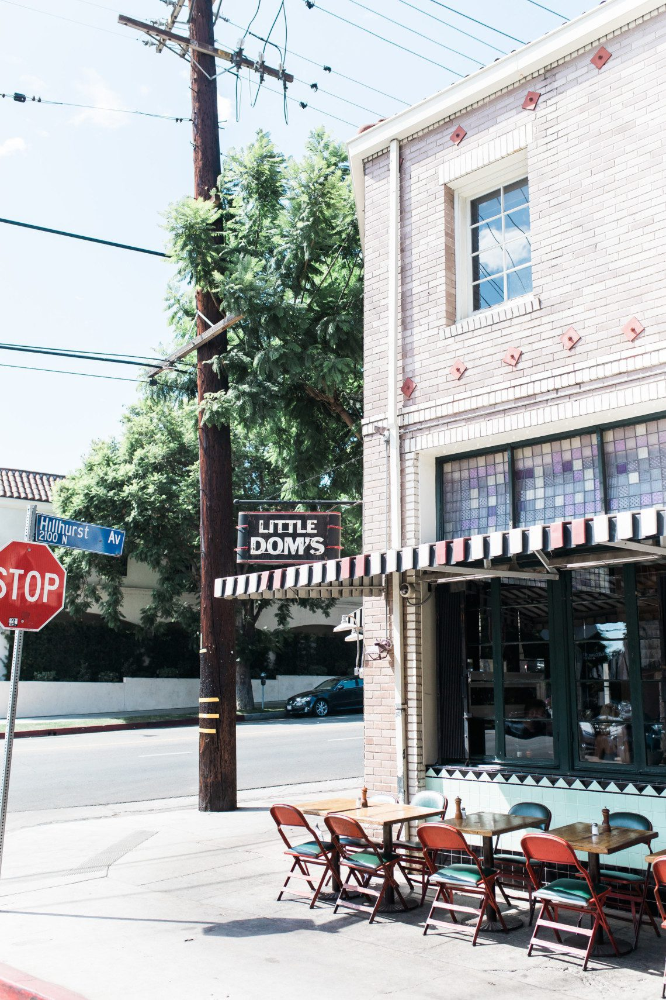
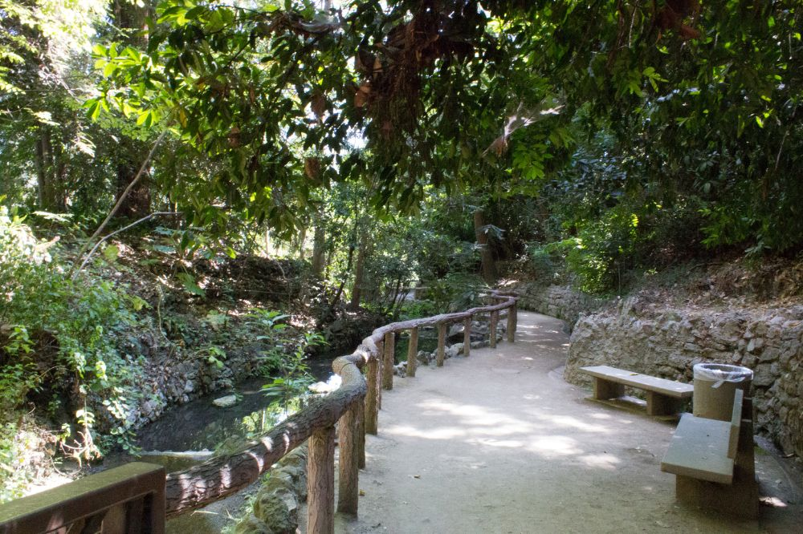
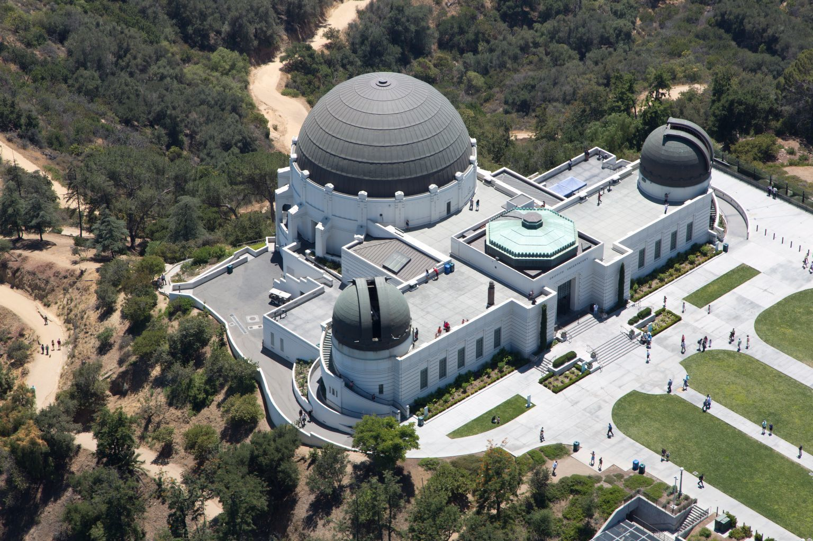
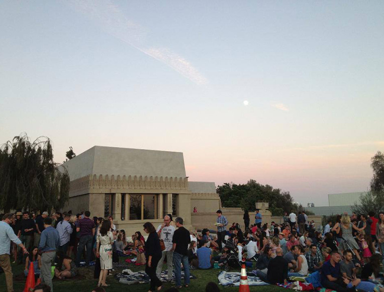

Los
Feliz

- Village Walk Score
- 87 / 100
- Village spine
- Hillhurst + Vermont
- Transit
- Metro B Line
- Historic root
- Rancho Los Feliz
The walk score is for Los Feliz Boulevard at Hillhurst, not the entire neighborhood. Village context via the Los Feliz Village BID.
Old Los Angeles, still living its best life.
Los Feliz does not announce itself the way some hillside neighborhoods do. You find out what it is by walking it: an old stone gate, a stair street older than the cars parked beside it, then Griffith Park appearing at the end of an ordinary residential block.
Vermont and Hillhurst carry the daily rhythm. Above them, the streets climb into Franklin Hills, Laughlin Park, The Oaks, and park-adjacent estates where the architecture—and the terrain—changes quickly.
The honest tradeoff: the Village is genuinely walkable, but you’ll want a car for the hills. Parking gets tight, driveways get steep, and the same topography that creates the views can make a simple errand less simple.
Let me give you a tourVillage blocks · coffee to dinner
The street that explains Los Feliz.
Hillhurst is where the neighborhood becomes a daily habit: coffee in the morning, errands on foot, a bookstore detour, then dinner without moving the car. It feels useful first and cool second—which is a very Los Feliz balance.
Start near Los Feliz Boulevard and walk south. Little Dom’s, All Time, Maru, small shops, and the residential streets between them make this less of a destination strip and more of the place locals keep returning to.
Explore Los Feliz VillageWhere in LA is Los Feliz?
Los Feliz sits east of Hollywood and below Griffith Park, with Silver Lake to the southeast and Atwater Village across the Los Angeles River. Downtown Los Angeles is to the southeast.
The Village gathers around Vermont and Hillhurst. Franklin Hills steps toward Silver Lake; Laughlin Park sits behind its gates; and The Oaks climbs into the western edge of Griffith Park.
The useful distinction: Los Feliz can be walkable, hilly, urban, and canyon-like within a few blocks. The exact street matters more here than the neighborhood name alone.
Places I keep sending clients to.
Secretly, they’re my favorites too.

All Time
Breakfast, dinner, wine, and a patio that makes staying longer than planned feel inevitable.

Kismet
Bright, vegetable-forward cooking in a room that feels unmistakably like the neighborhood.

Maru Coffee
A quietly polished Hillhurst stop with serious coffee and a line that moves with purpose.

Little Dom’s
The dependable neighborhood booth: red sauce, martinis, and the kind of room that already knows its role.
Schools in and around Los Feliz
Franklin Avenue ElementaryPublic · K–5 · 9/10
Thomas Starr King Middle SchoolPublic · 6–8 · 6/10
John Marshall Senior HighPublic · 9–12 · 8/10
International School of Los AngelesPrivate · Preschool–12 · Not rated
GreatSchools ratings are current as of August 2026 and may change. A rating is not the whole story. Assignments and eligibility depend on the exact address; verify through the LAUSD School Directory.
Parks & outdoor time

Fern Dell
A shaded path, old stonework, and the gentlest way into Griffith Park from the neighborhood.

Griffith Park
Trails before work, the Observatory above the city, and an enormous backyard at the neighborhood’s edge.

Barnsdall Art Park
Hollyhock House, art, lawn picnics, and a city view that gets especially good toward sunset.
Los Feliz houses that make the case.
From The Zonshine Edit.

Obsession No. 006
2666 Aberdeen Ave
A 1922 Stiles O. Clements Spanish Colonial Revival with hand-painted beams, stained glass, terraced grounds, and a speakeasy behind a vault door.
Read the house story →Los Feliz on your mind? I’ve got you.
Tell me what kind of life you want the block to make easier. We can start there.
Let’s start here